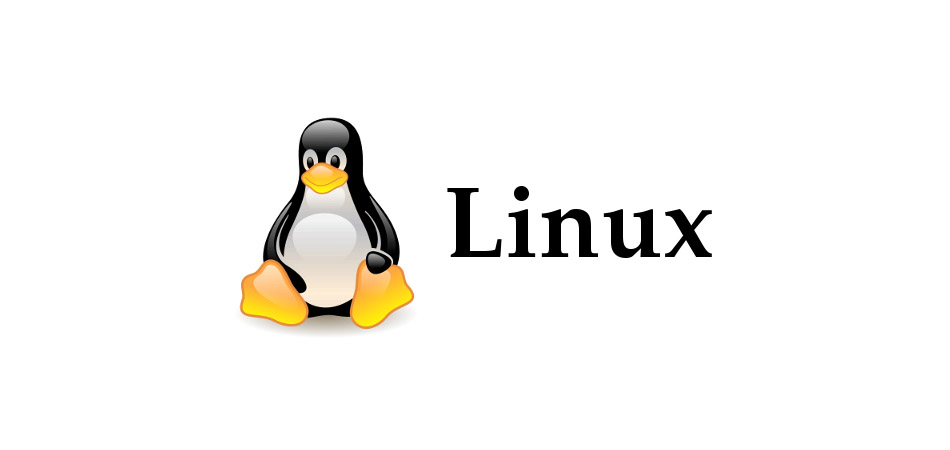
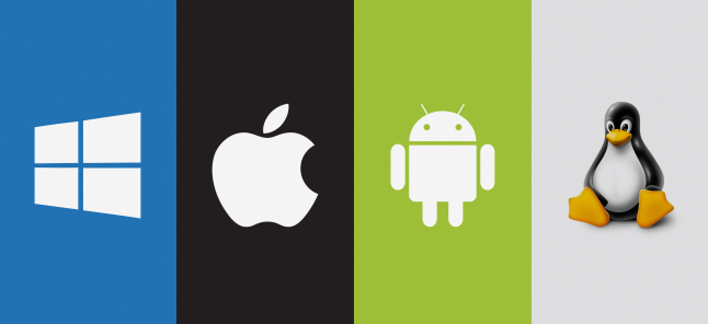

What is Linux?

Linux is the best-known and most-used open source operating system. As an operating system, Linux is software that sits underneath all of the other software on a computer, receiving requests from those programs and relaying these requests to the computer’s hardware.
How does Linux differ from other operating systems?

In many ways, Linux is similar to other operating systems you may have used before, such as Windows, macOS (formerly OS X), or iOS. Like other operating systems, Linux has a graphical interface, and the same types of software you are accustomed to, such as word processors, photo editors, video editors, and so on. In many cases, a software’s creator may have made a Linux version of the same program you use on other systems. In short: if you can use a computer or other electronic device, you can use Linux.
But Linux also is different from other operating systems in many important ways. First, and perhaps most importantly, Linux is open source software. The code used to create Linux is free and available to the public to view, edit, and—for users with the appropriate skills—to contribute to.
Linux is also different in that, although the core pieces of the Linux operating system are generally common, there are many distributions of Linux, which include different software options. This means that Linux is incredibly customizable, because not just applications, such as word processors and web browsers, can be swapped out. Linux users also can choose core components, such as which system displays graphics, and other user-interface components.
How can I get started using Linux?
There’s some chance you’re using Linux already and don’t know it, but if you’d like to install Linux on your home computer to try it out, the easiest way is to pick a popular distribution designed for your platform (for example, laptop or tablet device) and give it a try. Although there are numerous distributions available, most of the older, well-known distributions are good choices for beginners because they have large user communities that can help answer questions if you get stuck or can’t figure things out. Popular distributions include Elementary OS, Fedora, Mint, and Ubuntu, but there are many others. It's a common saying that the best Linux distro is the one that works best on your computer, so try a few to see which one best suits your hardware and your style of working.